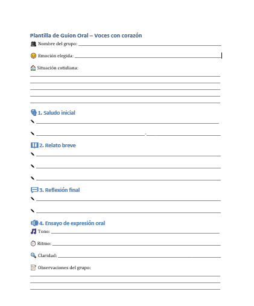

Creamos nuestro guion
Objetivo: Elaborar y ensayar un guion oral sobre una emoción y una situación cotidiana, desarrollando habilidades de expresión y comunicación.
1. Trabajo en grupos: elección de emoción y situación (10 minutos)
- Actividad: Cada grupo al azar elige una emoción (alegría, miedo, tristeza, sorpresa,...) y una situación cotidiana relacionada (por ej. perder un juguete, hacer nuevos amigos, tener miedo a la oscuridad, ...)
- Apoyo visual: Mural creado y tarjetas de las emociones del termómetro.
- Propósito: Favorecer la toma de decisiones en grupo y la conexión emocional.
2. Escritura guiada del guion oral (20 minutos)
- Estructura sugerida:
- Saludo inicial (por ej. "Hola, somos el grupo de la alegría...)
- Relato breve (por ej. "Un día, Paula encontró una caja mágica...)
- Reflexión final (por ej. "Aprendimos que compartir nos hace sentir bien...)
- Materiales: Plantilla de guion, lápices y folios.

- Apoyo docente: Orientar sobre vocabulario emocional, conectores y estructura narrativa.
- Propósito: Desarrollar la competencia lingüística y emocional.
3.Ensayo de expresión orl (15 minutos)
- Actividad: Cada grupo ensaya su guion cuidando el tono, ritmo, claridad y expresión corporal.
- Apoyo lúdico: Juego Adivina.
- Propósito: Preparar la futura grabación del podcast y fomentar la autoevaluación.